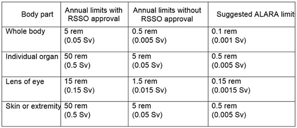

06.F Ionizing Radiation
06.F.04
06.F.04 Dose Limits.
- Occupational dose limits shall be based on the TEDE. > See Table 6-1.
- An annual (calendar year) limit that is the more limiting of: 5 rem [0.05 sieverts (Sv)] TEDE, or the sum of the deep dose equivalent and the committed dose equivalent to any individual organ or tissue of 50 rem (0.5 Sv), or 15 rem (0.15 Sv) to the lens of the eye, or 50 rem (0.05 Sv) shallow dose equivalent to the skin or any extremity.
- Without the written approval of the USACE Radiation Safety Staff Officer (RSSO), the annual occupational dose shall not exceed the more limiting of: 0.5 rem (0.005 Sv) TEDE, or the sum of the deep dose equivalent and the committed dose equivalent to any individual organ or tissue of 5 rem (0.05 Sv), or 1.5 rem (0.015 Sv) to the lens of the eye, or 5 rem (0.05 Sv) shallow dose equivalent to the skin, or any extremity.
TABLE 6-1
Occupational Dose Limits

- To keep doses ALARA, the user shall set administrative action levels below the annual dose limits. These action levels shall be realistic and attainable. Suggested action levels are the more limiting of: 0.1 rem (0.001 Sv) TEDE, or the sum of the deep dose equivalent and the committed dose equivalent to any individual organ or tissue of 0.5 rem (0.005 Sv), or 0.15 rem (0.0015 Sv) to the lens of the eye, or 0.5 rem (0.005 Sv) shallow dose equivalent to the skin or any extremity.
- Any exposure in excess of an ALARA limit requires investigation by the RSO.
- In accordance with DA PAM 385-24, planned special exposures shall not be performed.
- No employee under 18 years of age shall receive occupational exposure to ionizing radiation (excluding exposure to Radon-222).
- The dose to a declared pregnant employee shall not exceed 0.5 rem (0.005 Sv) during the entire gestation period and efforts shall be made to avoid variations in a uniform monthly exposure rate. If the dose to the embryo/fetus is between 0.05 rem and 0.5 rem at the time of declaration, then dose to the embryo/fetus is limited to 0.05 rem for the remainder of gestation.
{kind=link}